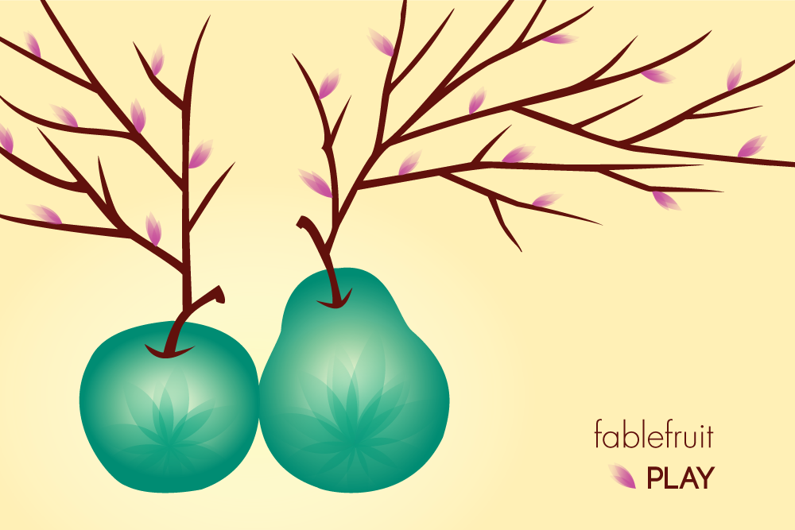

projects
< fablefruit
Fablefruit is the concept for a game meant for a web application or a mobile device. For this project, I used Adobe Illustrator to create a vertical and horizontal splash page as well as a Point of Sale poster for the game.
Fablefruit is a game in which you can nurture and grow your collection of fruits so they can turn into Fablefruits. In the design of the splash page and the Point of Sale poster, my goal was to convey the mystical quality of a Fablefruit through the use of a simple color palette enhanced by gradients and transparencies.